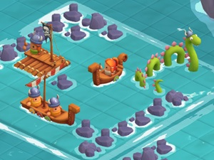
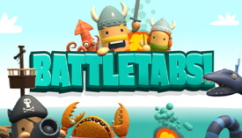
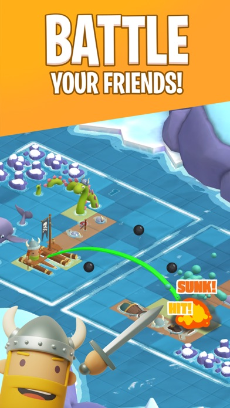

Introduction
BattleTabs.io reimagines classic Battleship as a fast, asynchronous PvP naval combat game. Instead of waiting for opponents, you queue your moves on your own time. What makes it unique is the integration of ship abilities, seasons, and a live BTN leaderboard. Players love it because it transforms luck-based guessing into a deep strategic puzzle. With unique hull sizes and special abilities for each ship, every match offers a fresh tactical challenge. Climb the ranks, unlock cosmetics, and prove your captain skills in this addictive, easy-to-learn but hard-to-master browser game.
Getting Started

Jumping into BattleTabs.io is seamless. First, build your fleet by selecting ships, each with a specific hull size and a unique ability. Your starting fleet is fixed, but playing unlocks more ship types to mix and match. Once in a match, the game is asynchronous; you pick a coordinate on the enemy grid to attack and queue your move. The game instantly reveals if it is a hit, miss, or sunk ship. Use the visible patterns of misses and hits to triangulate the rest of the opponent's fleet. Crucially, manage your ship abilities, which recharge on a per-turn cooldown. These abilities can scout, defend, or attack multiple squares. Sink every enemy ship before they sink yours to push your BTN rating up. The intuitive grid-based controls and quick matchmaking mean you can be in your first match within a minute. Focus on basic shooting heuristics early on, like chasing a hit in a line, to secure quick early victories and understand the core mechanics.
Basic Tips
1. Master classic heuristics: When you get a hit, chase it in a straight line until it dies, then switch axes. This maximizes your chances of sinking ships quickly. 2. Space out your fleet: Don't place ships adjacent to each other. Leaving a one-square gap between your ships prevents area-of-effect abilities from devastating multiple vessels at once. 3. Use scouting abilities early: If your ship has a radar or scout ability, use it in the first few turns to reveal enemy positions and gain an immediate informational advantage. 4. Track cooldowns: Pay close attention to your ability cooldowns. Don't waste a multi-square attack ability when you only have one hit left on a ship; save it for when you are certain an enemy ship is in the area. 5. Read the board state: Use the pattern of misses to deduce where large ships cannot be, narrowing down the possible locations of the enemy fleet.
Advanced Strategies

1. Ability Synergy: Combine ships that complement each other. Use a scout ship to reveal a sector, then immediately follow up with a multi-square attack ship to guarantee heavy damage. 2. Grid Probability Mapping: As the game progresses, mentally divide the board into sectors based on the hull sizes of the remaining enemy ships. Only target squares where a remaining ship could physically fit, ignoring dead zones. 3. Baiting Abilities: If you know the opponent has a defensive or counter-attack ability, place a small, expendable ship in a highly visible area to bait their cooldown. Once they waste it, aggressively push your main fleet's attacks. 4. Asynchronous Mind Games: Since the game is async, consider the psychological aspect. If you hit a ship, they might move or adjust their strategy on their next turn. Anticipate their adjustments and set traps in adjacent sectors where they might relocate their focus.
Pro Tips

1. Parity Targeting: Use a checkerboard pattern for your initial shots. Since the smallest ships take up at least two squares, a checkerboard pattern guarantees you will eventually hit every ship while minimizing wasted shots. 2. Cooldown Baiting: Deliberately leave a damaged ship alive but un-targetable to force the opponent to waste turns guessing, while you use your scout abilities to map their entire board. 3. Edge Hugging: Place your most valuable ships along the edges or corners of your grid. This reduces the number of angles the opponent can attack from and limits the effectiveness of their multi-directional area abilities.
Conclusion
BattleTabs.io brilliantly evolves the classic Battleship formula with deep ability mechanics and asynchronous PvP. Whether you are a casual player looking for quick matches or a hardcore strategist aiming for the top of the BTN leaderboard, the game offers endless replayability. Build your ultimate fleet, outsmart your opponents, and start conquering the seas today!